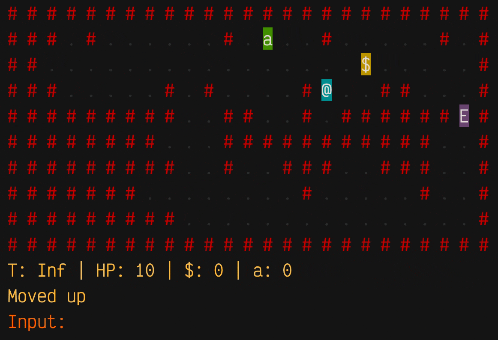
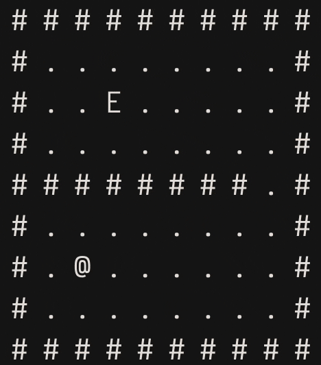
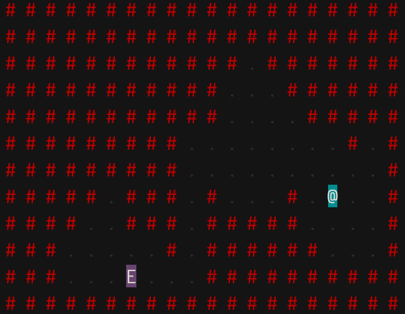

# Create room
n_rows <- 9
n_cols <- 10
m <- matrix(rep(".", n_rows * n_cols), n_rows, n_cols)
m[1, ] <- "#" # walls
m[, 1] <- "#"
m[nrow(m), ] <- "#"
m[, ncol(m)] <- "#"
# Add player and enemy
m[7, 3] <- "@" # player
m[3, 3] <- "E" # enemy
E chases the player @ who collects gold $ and and an apple a.tl;dr
I’ve experimented with simple breadth-first search for {r.oguelike}, a work-in-progress game-in-a-package for R. This means enemies can pathfind and chase down the player character.
Hunting the hunter
I’ve written before about the inception of {r.oguelike}, a concept for a roguelike game written in R, along with a simple method for creating procedural tile-based cave-like dungeons.

So far the enemies in the game have been stationary.
I could let them wander randomly on each turn, which is easy to implement, but boring and unrealistic. Far better would be to introduce some kind of pathfinding via an algorithm, which would make enemies head toward the player character to engage in battle.
In this post I’ll start with a naive approach—simply labelling all tiles with distance from the target—then show how an approach called ‘breadth-first search’ can alleviate the problem.
Layers deep
There’s a number of ways I could implement pathfinding in R. For purposes of this post, I’m using an approach that I think makes it easier to grasp conceptually.
Each dungeon will be composed of two related matrices: one matrix is the tile map, which holds the tiles the user sees (i.e. # for walls, . for floor, @ for the player character, E for enemy); the second matrix isn’t seen by the user, but holds travel-distance scores used by the enemy character to find a path to the target.
I’ll use m throughout as the name of the matrix object holding the tile map and d as the name of the matrix object holding the distance map.
Bear in mind that the characters can only move one tile per turn in a north, south, east or west direction, which has implications for how we label tiles with their distances.
Don’t keep it simple, stupid
Consider this very basic dungeon room that hosts an enemy character E that is seeking the player character @. It’s just an R matrix object, but we can print it nicely so it’s easier to read.
Click for R code
Manually create a basic, rectangular dungeon room:
For convenience, a function that pretty-prints the matrix to the console:
# Function to print the map nicely
print_tiles <- function(x) {
for (i in seq(nrow(x))) {
cat(x[i, ], "\n")
}
}print_tiles(m)print_tiles(m)# # # # # # # # # #
# . . . . . . . . #
# . E . . . . . . #
# . . . . . . . . #
# . . . . . . . . #
# . . . . . . . . #
# . @ . . . . . . #
# . . . . . . . . #
# # # # # # # # # # What’s the simplest way that the enemy can find a path to the player?
Probably it’s to label every traversable tile with a Manhattan-distance (i.e. like a taxicab would move on the gridded streets of New York) away from the player’s position. Then the enemy can check its neighbouring tiles on each turn and select the next highest distance score until it reaches the player.
So, below I’ve created a distance map by assigning the player position a score of 100, then I’ve decreased the score by 1 with each additional tile away from the player (remembering that characters can only move north, south, east or west). Walls score zero, so they’re effectively ignored.
Click for R code
get_distance <- function(m, peak_score) {
# Initiate distance matrix filled with zero
n_rows <- nrow(m)
n_cols <- ncol(m)
d <- matrix(rep(0, n_cols * n_rows), n_rows, n_cols)
# Player location gets peak_score
player_loc <- which(m == "@", arr.ind = TRUE)
m[player_loc[1], player_loc[2]] <- peak_score
# Surrounding tiles get successively smaller distance scores
for (col_ind in seq(n_cols)) {
for (row_ind in seq(n_rows)) {
distance <- abs(player_loc[1] - row_ind) + abs(player_loc[2] - col_ind)
value <- peak_score - distance
if (value < 0) value <- 0
d[row_ind, col_ind] <- value
}
}
# Walls aren't traversable, assign low value
walls <- which(m == "#")
d[walls] <- 0
d
}get_distance(m, 100) [,1] [,2] [,3] [,4] [,5] [,6] [,7] [,8] [,9] [,10]
[1,] 0 0 0 0 0 0 0 0 0 0
[2,] 0 94 95 94 93 92 91 90 89 0
[3,] 0 95 96 95 94 93 92 91 90 0
[4,] 0 96 97 96 95 94 93 92 91 0
[5,] 0 97 98 97 96 95 94 93 92 0
[6,] 0 98 99 98 97 96 95 94 93 0
[7,] 0 99 100 99 98 97 96 95 94 0
[8,] 0 98 99 98 97 96 95 94 93 0
[9,] 0 0 0 0 0 0 0 0 0 0See how the player-position at [7,3] is 100 and the values then drop by 1 in all directions?
So the enemy would move south from its start position at [3,3] to the target position at [7,3], moving along a score gradient of 96 to 100.
There’s an issue with this though: obstacles. What do you think will happen if we put a dividing wall between the characters? Here’s the same room with a wall splitting the characters, plus the distance matrix using the same approach as above.
Click for R code
m[5, 2:8] <- "#"print_tiles(m)# # # # # # # # # #
# . . . . . . . . #
# . E . . . . . . #
# . . . . . . . . #
# # # # # # # # . #
# . . . . . . . . #
# . @ . . . . . . #
# . . . . . . . . #
# # # # # # # # # # Click for R code
d <- get_distance(m, 100)
d [,1] [,2] [,3] [,4] [,5] [,6] [,7] [,8] [,9] [,10]
[1,] 0 0 0 0 0 0 0 0 0 0
[2,] 0 94 95 94 93 92 91 90 89 0
[3,] 0 95 96 95 94 93 92 91 90 0
[4,] 0 96 97 96 95 94 93 92 91 0
[5,] 0 0 0 0 0 0 0 0 92 0
[6,] 0 98 99 98 97 96 95 94 93 0
[7,] 0 99 100 99 98 97 96 95 94 0
[8,] 0 98 99 98 97 96 95 94 93 0
[9,] 0 0 0 0 0 0 0 0 0 0So, as before, the enemy begins on a distance score of 96 at [3,3] and will move south to 97 on [4,3].
Now what? The wall has been scored as zero, so the enemy looks around for the largest distance score of its remaining neighbours. They all score 96, so the enemy character just selects randomly one of west, north or east.
Uhoh: this means the enemy will be stuck in an infinite loop between the adjacent scores of 96 and 97. This isn’t very intelligent.
How can we account for blockages like this?
Here comes the flood-fill
Perhaps a better approach is to ‘flood fill’ the distance scores. Imagine the start point is a source of water and it’s filling up the dungeon. Obviously the water will have to flow around walls and the hardest-to-reach areas will be filled last.
A basic flood-fill approach we can implement is ‘breadth-first’, which visits tiles in a ‘frontier’ expanding from the start point. Distance scores are assigned once to frontier tiles and neighbours are consecutively added to a ‘queue’ to be checked.
This is slightly expensive because every traversable tile has to be assessed, but it means that multiple enemies can all use the same distance map to navigate.1
We don’t need to get too complicated for {r.oguelike}; it just has to work. I’ll illustrate the breadth-first approach with a pretty basic and verbose implementation.2
Deep breadth-first
Now to implement it in R. Reminder: we’ll use two matrices to represent the tile grid (seen by player) and the distance grid (just holds the distance scores).
I’m going to use three main functions:
initiate_distance_map(), which creates a distance-map matrix of equal size to the tile map and fills all traversable spaces with zero and all non-traversable spaces withInfinity (which the character will want to avoid)populate_distance_map, which flood-fills the traversable space by expanding a frontier from the start point, assigning a distance score to each neighbour that’s +1 of the score of the parent tile and adding those neighbours to the frontier queue so they can be inspected nextmove_enemy()to move the enemy character one tile per turn towards the tile with the lowest distance score (i.e. the tile that holds the player@)
Create the distance-score matrix
Using the same obstacle map from earlier in the post, we can first initiate a complementary distance-score matrix:
initiate_distance_map <- function(m) {
d <- m # copy the tile map
d[which(d != "#")] <- 0 # set non-wall tiles to 0
d[which(d == "#")] <- Inf # set wall tiles to infinity
matrix(as.numeric(d), nrow(d), ncol(d)) # recast as numeric
}Now we can adjust those distance scores. The algorithm is basically:
- Create a frontier vector of tile indices (i.e. the edges of the flood-fill as it moves outward) and add the starting tile (i.e. the tile index that holds the player character)
- Create a vector to hold tile indices that we’ve already visited
- Begin a loop where:
- the first tile in the frontier queue becomes the ‘current’ tile
- the current tile is removed to the frontier
- the current tile is added to the visited list
- the tile indices of the current tile’s neighbours (north, south, east and west) are identified
- if not yet visited, the neighbours are assigned distance scores that are +1 of the current tile
- Continue the loop until you run out of tiles in the frontier queue
I’ve written a small sub-function to handle neighbour-finding:
get_neighbours <- function(m, current) {
n_rows <- nrow(m)
c(
if (m[current - n_rows] != "#") current - n_rows,
if (m[current - 1] != "#") current - 1,
if (m[current + 1] != "#") current + 1,
if (m[current + n_rows] != "#") current + n_rows
)
}Which plugs into the main function for implementing the algorithm that assigns distance scores:
populate_distance_map <- function(m, d) {
start <- which(m == "@") # start tile, i.e. player tile
# Initiate vectors
frontier <- start # to be assessed
visited <- c() # have been assessed
while (length(frontier) > 0) {
current <- frontier[1] # set first tile of frontier as current
frontier <- frontier[!frontier == current] # remove current tile from frontier
visited <- append(visited, current) # mark current as visited
neighbours <- get_neighbours(m, current) # get vector of neighbour indices
neighbours <- neighbours[!neighbours %in% visited]
for (neighbour in neighbours) {
if (!neighbour %in% visited) { # only assign distance to unvisited neighbours
d[neighbour] <- d[current] + 1 # assign distance, one more than parent
}
}
frontier <- append(frontier, neighbours) # add neighbour to the frontier
}
d
}Move to target
Finally, here’s the function that lets the enemy check its neighbours for the lowest distance score and move one tile in that direction:
move_enemy <- function(m, d) {
# Find tiles of interest
en_loc <- which(m == "E")
player_loc <- which(m == "@")
n_rows <- nrow(m)
# Get neighbour tile indices
ind <- c(
n = en_loc - 1,
s = en_loc + 1,
e = en_loc + n_rows,
w = en_loc - n_rows
)
# Get tile content for neighbours
tiles <- c(
n = m[ind["n"]],
s = m[ind["s"]],
e = m[ind["e"]],
w = m[ind["w"]]
)
# Get the distance score for a tile if traversable/target
dist <- c(
n = if (tiles["n"] %in% c(".", "@")) d[ind["n"]],
s = if (tiles["s"] %in% c(".", "@")) d[ind["s"]],
e = if (tiles["e"] %in% c(".", "@")) d[ind["e"]],
w = if (tiles["w"] %in% c(".", "@")) d[ind["w"]]
)
# Sample a direction if there's ties, move there
direction <- sample(names(dist[dist == min(dist)]), 1)
en_loc_new <- ind[names(ind) == direction]
m[en_loc] <- "." # replace old location with floor tile
m[en_loc_new] <- "E" # place enemy in new location
m
}Put it all together
Now to apply the functions to our dungeon room, with its minor obstacle. Here’s a reminder of the layout:
print_tiles(m)# # # # # # # # # #
# . . . . . . . . #
# . E . . . . . . #
# . . . . . . . . #
# # # # # # # # . #
# . . . . . . . . #
# . @ . . . . . . #
# . . . . . . . . #
# # # # # # # # # # Now we can initiate the distance-score matrix:
d <- initiate_distance_map(m)
d [,1] [,2] [,3] [,4] [,5] [,6] [,7] [,8] [,9] [,10]
[1,] Inf Inf Inf Inf Inf Inf Inf Inf Inf Inf
[2,] Inf 0 0 0 0 0 0 0 0 Inf
[3,] Inf 0 0 0 0 0 0 0 0 Inf
[4,] Inf 0 0 0 0 0 0 0 0 Inf
[5,] Inf Inf Inf Inf Inf Inf Inf Inf 0 Inf
[6,] Inf 0 0 0 0 0 0 0 0 Inf
[7,] Inf 0 0 0 0 0 0 0 0 Inf
[8,] Inf 0 0 0 0 0 0 0 0 Inf
[9,] Inf Inf Inf Inf Inf Inf Inf Inf Inf InfThen populate the distance scores from the target:
d <- populate_distance_map(m, d)
d [,1] [,2] [,3] [,4] [,5] [,6] [,7] [,8] [,9] [,10]
[1,] Inf Inf Inf Inf Inf Inf Inf Inf Inf Inf
[2,] Inf 18 17 16 15 14 13 12 11 Inf
[3,] Inf 17 16 15 14 13 12 11 10 Inf
[4,] Inf 16 15 14 13 12 11 10 9 Inf
[5,] Inf Inf Inf Inf Inf Inf Inf Inf 8 Inf
[6,] Inf 2 1 2 3 4 5 6 7 Inf
[7,] Inf 1 0 1 2 3 4 5 6 Inf
[8,] Inf 2 1 2 3 4 5 6 7 Inf
[9,] Inf Inf Inf Inf Inf Inf Inf Inf Inf InfSuccess. You can see the start tile at [7,3] scores zero and emanates out to the right, around the obstacle, before wrapping back to the top-left and toward the enemy at position [3,3].
The enemy needs only to move to the neighbouring tile with the lowest distance score. So from 16 to 15 on either [4,3] or [3,4], then to 14, to 13, etc.
See how this time the character won’t get stuck trying to move south? The distance scores decrease from left to right before curving round the wall in the direction of the player’s tile.
For fun, we can print to the console an animation of the movement, which I’ve captured in gif form.
Click for R code
repeat {
cat("\014") # clear console
m <- move_enemy(m, d) # move enemy
print_tiles(m) # print to console
Sys.sleep(0.5) # wait
if (!any(m == "@")) break # stop if player captured
}
You can see the enemy go round the wall and reach the player using a pretty efficient path.
And in a more dungeonlike room:

The end of the tunnel?
I’ve smashed this together quickly with some completely un-optimised code. Once I’ve ironed out some kinks, it’ll go into the {r.oguelike} package proper.
Of course, I’ll need to consider:
- a moving player-character, so the distances map will need to be updated every turn
- limiting the range of the frontier to some specified distance away from the player, so that an enemy will only begin pathfinding when a player is closer and more ‘detectable’3
- a ‘vision-cone’ so the enemy only ‘sees’ the player if there’s a clear set of floor tiles between them
- allowing different enemy classes to move differently, e.g. attack immediately, randomly, or when the player is within a certain distance
As a basic preview, here’s what it looks like when you throw the pathfinding into a procedurally-generated dungeon from {r.oguelike}:
This gives a nice impression of the panic that might set in if you’re down to 1 HP and a monster is chasing you into a dead-end.
Panic: a quintessential roguelike ‘feature’!
Environment
Session info
Last rendered: 2023-07-02 12:57:10 BSTR version 4.3.1 (2023-06-16)
Platform: aarch64-apple-darwin20 (64-bit)
Running under: macOS Ventura 13.2.1
Matrix products: default
BLAS: /Library/Frameworks/R.framework/Versions/4.3-arm64/Resources/lib/libRblas.0.dylib
LAPACK: /Library/Frameworks/R.framework/Versions/4.3-arm64/Resources/lib/libRlapack.dylib; LAPACK version 3.11.0
locale:
[1] en_US.UTF-8/en_US.UTF-8/en_US.UTF-8/C/en_US.UTF-8/en_US.UTF-8
time zone: Europe/London
tzcode source: internal
attached base packages:
[1] stats graphics grDevices utils datasets methods base
loaded via a namespace (and not attached):
[1] htmlwidgets_1.6.2 compiler_4.3.1 fastmap_1.1.1 cli_3.6.1
[5] tools_4.3.1 htmltools_0.5.5 rstudioapi_0.14 yaml_2.3.7
[9] rmarkdown_2.22 knitr_1.43.1 jsonlite_1.8.5 xfun_0.39
[13] digest_0.6.31 rlang_1.1.1 evaluate_0.21 Reuse
CC BY-NC-SA 4.0